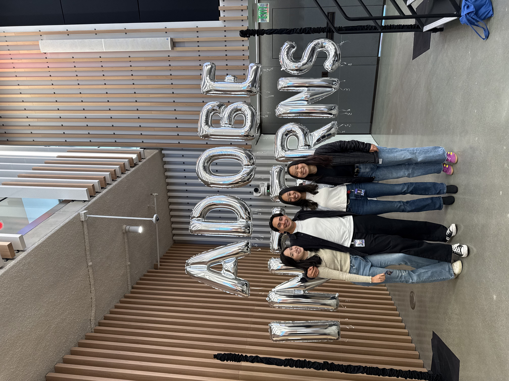
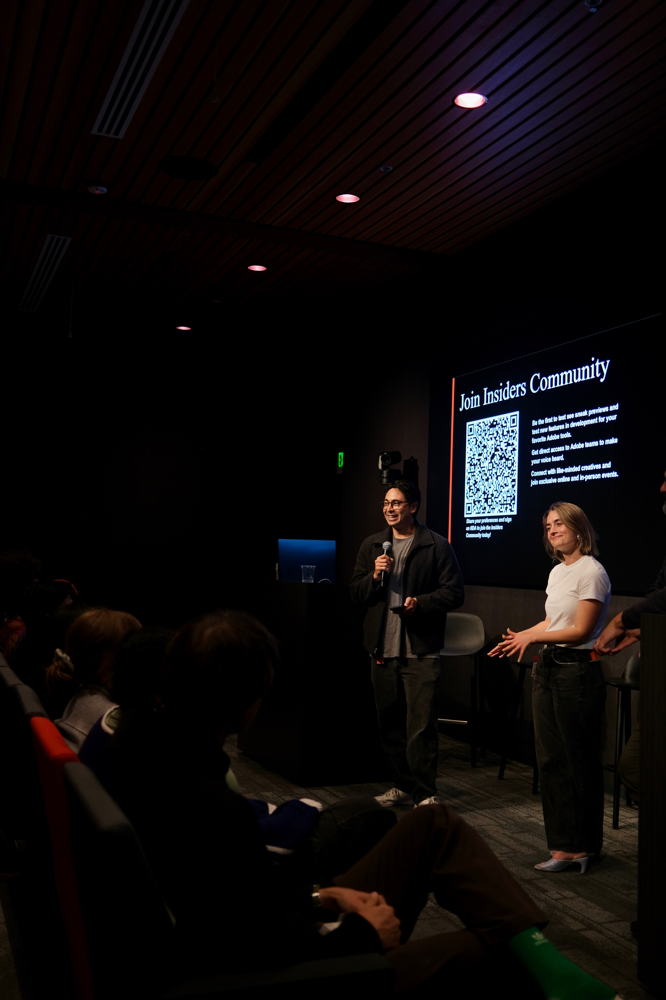
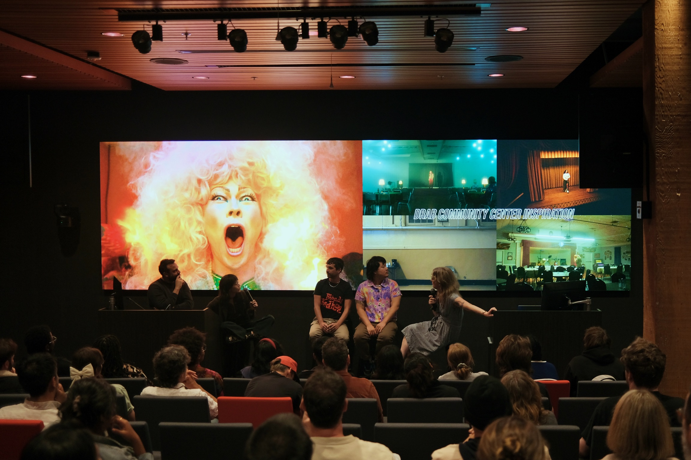

As a Product Management Intern on Premiere Pro, I improved retention by revamping the learning experience for new users, shaped organization-wide protocol for using AI codegen tools, and put on a film festival for the local bay area film community.
Product Management at Adobe




Four years of early stage startup experience
After graduating college into the pandemic, I spent four years in early stage startups prototyping a variety of roles in different industries, grounding myself as a professional, and crafting a compass for my future. I prioritized personal and professional growth in order to reflect and redefine an identity that had previously been tethered to football.
Featured Work

Cellio
Regenerative stem-cell startup striving to prevent and cure blindness.
Learn More

Deer District All Access
Digital marketing campaign for the Milwaukee Bucks.
Learn More

Jellyman
Childish Gambino's boba shop in Silverlake, CA.
Learn More
Always building things
Making something out of nothing is my favorite pastime. Whether it be software, hardware, or something in between, I am always tinkering. Hopefully one day one of my projects will turn into a business, but for now I am just having fun and learning along the way.
Featured Work

DJ Controller
Engineered a custom DJ controller with an ESP-32 microprocessor.
Learn More

DirtyLingo
Vibe coded a playful language learning tool in a 30 minute hackathon.
Learn More
10-Kademy
Built a study tool for MBA students looking to practice accounting with real 10-Ks.
Learn More

harryschwartz.com
Developed this website from scratch.
Learn More
Dodge Dart
Refurbished my great grandpa's 1963 baby blue muscle car.
Learn More
BS, Product Design from Stanford
In Stanford's Design Thinking program I was trained to take a human-centered approach, focusing on "needfinding" to identify and define critical needs before developing solutions. This method ensures that the products I create are desired and used by people, achieving better product-market fit. Additionally, the program emphasizes practical skills in both digital UI/UX and physical prototyping, equipping me to bring ideas to life effectively. This holistic approach enhances my ability to innovate, collaborate, and succeed in diverse professional environments.
Featured Work

Yearbook
WebApp for Stanford Seniors in the Class of 2020 who didn't get to say goodbye to their
classmates due to the COVID-19 pandemic.
Learn More

Spikeball Net
Machined a Spikeball net out of steel.
Learn More
Former D1 athlete
The mindset I developed as a Division I college football player directly translates into my work. As a teammate, I go above and beyond my assignments, take pride in attention to detail, and remain resilient through the inevitable waves of adversity. As a leader, I balance empathy and tough love to push my teammates to accomplish their goals. My superpower is propelling groups of high-caliber individuals to succeed as a team.

Generally regarded as a good human being
You spend a lot of time with your work colleagues so it is important you get a peek into my personality. Instead of ingratiating myself with compliments I asked my previous bosses to do so instead.
Shameless Testimonials

Julie Sunderland
Founder, Oriane | Prev. Director of Strategic Investments, Gates Foundation
Having had the pleasure of mentoring Harry, I can attest to his exceptional combination of intellectual prowess, curiosity, and integrity. Harry joined my team with no prior experience in biotech, yet he quickly built credibility by immersing himself in the field, listening thoughtfully, and asking insightful questions. His ability to synthesize complex scientific data and create compelling narratives for investors was instrumental in advancing two early-stage biotech companies, showcasing his creative genius and strategic thinking.
Harry’s commitment to personal growth is evident in his intentional approach to his career and life. He focuses not just on advancing his professional skills but also on understanding how to drive meaningful change and work with integrity. His willingness to engage in deep, reflective conversations about leadership and impact demonstrates a maturity and depth of character that sets him apart from his peers.
Moreover, Harry’s ability to manage ambiguity and thrive in a fluid start-up environment speaks to his exceptional problem-solving skills and adaptability. He has consistently shown that he can take on challenging projects, build strong relationships, and deliver outstanding results. Harry's unique combination of curiosity, creativity, and integrity will make him a valuable asset to any organization.
Ian McMilan
VP, TTCER Partners | Prev. CGO, Mojito
Harry’s best quality, in my opinion, is the depth of his character. He oozes character and integrity. He also leads with his heart. I witnessed on several occasions Harry go out of his way to uplift colleagues, to deliver hard truths - both to customers and internally - when he could have easily covered things with a white lie, or skirted around them. He always chooses the right path - even if it's the hard one. I trust him implicitly.
Harry’s performance was head and shoulders above other well-qualified candidates in similar roles for the following reasons:
Ability to manage ambiguity: Harry's first assignment involved managing a project on a very short timeline with a client that constantly changed the scope. Harry took charge, led all meetings, persuaded the client to change course midway, and even flew unprompted to the launch site, ensuring our tech surpassed expectations. He built strong client relationships and created essential tools from scratch that we continued to use for future projects.
Insatiable curiosity: I’ve never seen someone grow so much in such a short time, and this was largely due to self-directed learning. He asked questions that showed a depth of understanding and foresight that was shocking at times. I let Harry run his own offense with little oversight because he had built so much trust so quickly.
Leadership: Harry is a natural leader. His style is defined by his ability to influence, build relationships, and earn credibility through hard work.